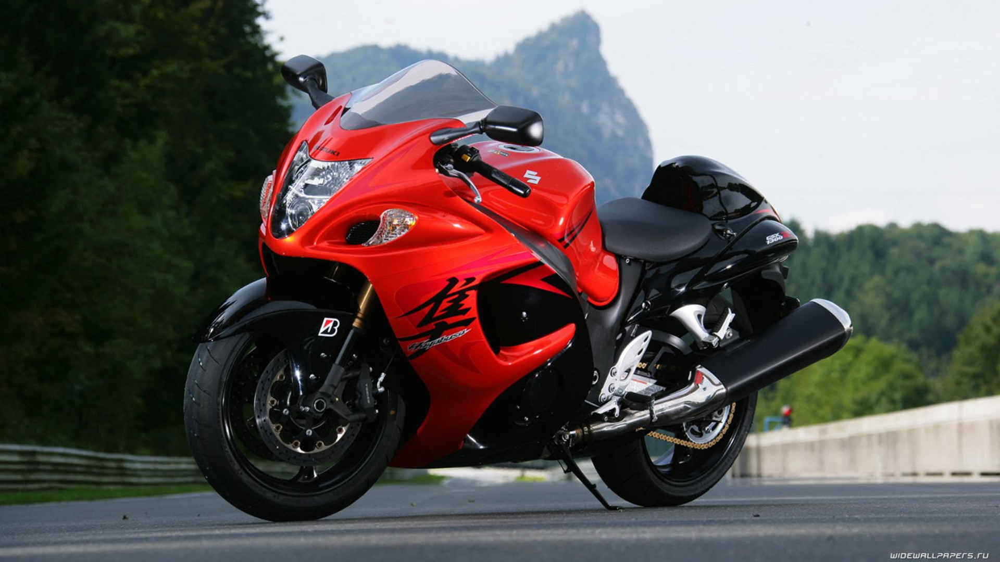

Bikes Website
Home Page
| About | Contact |

 Continentel |  Ninja H2R |  Continentel |
- A motorcycle (or motorbike) is a vehicle used to transport people from one place to another. It does not have 4 wheels like a car. It has 2 wheels like a bicycle, and it has a motor like a car. A motorcycle is usually driven by one person. A passenger can also ride on the back of the motorcycle. Some motorcycles have a sidecar that can carry another passenger.
- In poor countries, motorcycles are used by many as a cheap method of transportation. Many people who do not have the money to buy a car can afford a small motorcycle. In rich countries, large powerful motorcycles are used more as a hobby or sport.
In 1901, the first successful motorcycle was made by the company called "Indian motorcycles" in Springfield, Massachusetts. Since then, many other companies have made them. Major manufacturers include Honda, Suzuki, Yamaha. A well known American manufacturer of motorcycles is Harley-Davidson